Проблема
Нужно разместить барахло в багажнике:
- Вытаскивая одно, не нужно вытаскивать еще десять.
- Вытаскивать "сверху" также легко, как и "снизу".
- "Верхнее" да не раздавит "нижнее".
- Грязное да не испачкает чистое.
Разные пластмассовые, сетчатые, матерчатые и прочие "органайзеры" не прижились: "организовывать" приходилось уже их.
Предыдущее решение для Jeep Cherokee XJ
В 2013 году изготовил Органайзер для Jeep Cherokee XJ, читать здесь.
Напомним, что будем считать далее, что:
- Органайзер - все целиком.
- Ящик - то, что выдвигается.
- Рундук - то, что не выдвигается.
- Полка - верхняя плоскость Органайзера, образованная крышками Ящика и Рундука.
- Модель - проект Органайзера в SolidWorks.
Новый Органайзер для Jeep Commander
Пожелания к новому Органайзеру по результатам изготовления старого:
- Не сверлить отверстия, а заиспользовать т.н. "конструкционный алюминиевый профиль". На нём вместо заклёпок, а сверление отверстий оказалось самой трудозатратной операцией, можно пользоваться фирменным крепежом на болтах.
- Не использовать листовой алюминий. Там, где он используется, и тонкая фанера справляется, а резать фанеру намного проще.
- Максимально заводское изготовление - резы профиля и фанеры хочется заказать.
Предварительное проектирование в SolidWorks:
- Стоимость фирменного крепежа получалось в районе 20 тыр. Общая стоимость Органайзера выходила за 50 тыр, что очень много - можно заказать готовый из фанеры за 15-30 тыр, например.
- Была опасность, что фирменный крепеж под нагрузкой даст слабину - использовался крепеж без сверления отверстий, а его фиксация происходит фактически за счёт трения и небольшой деформации профиля.
Что меняем в пожеланиях:
- Вместо фирменного крепежа используем шпильки - это дёшево, но снова придётся сверлить отверстия. Шпильки будут сопротивляться растяжению, профиль - сжатию, фанера стенок - кручению.
- Некоторые не нагруженные соединения делаем через фирменный крепеж - так проще.
- На чертежах шпильки не отмечаем.
Окончательное проектирование в SolidWorks
Проект SolidWorks: Органайзер.zip
Все чертежи одним файлом: Органайзер.pdf
Далее приведены изображения всех чертежей с комментариями.
Чертёж 1. Общий вид. Разное положение Ящика и убранные крышки.
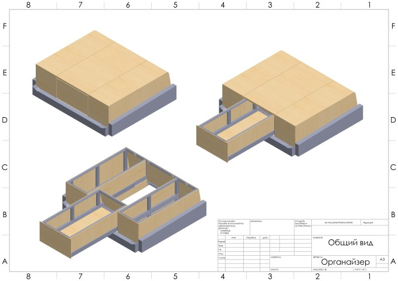
{kind=link}
Чертёж 2. Главные размеры. Результирующие размеры Органайзера и размеры популярных объектов для сравнения.
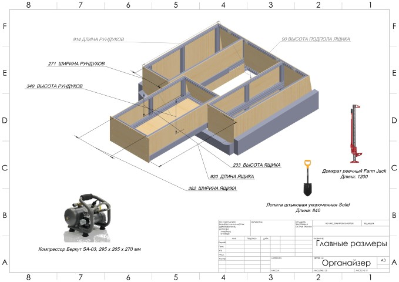
{kind=link}
Чертёж 3. Контроль спереди. Визуально проверяем зазоры Ящика, крышек и т.п.
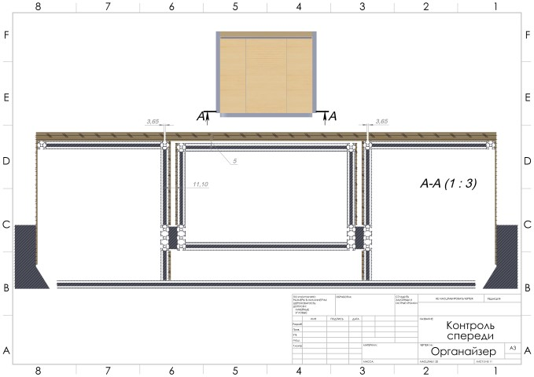
{kind=link}
Чертёж 4. Контроль сзади. Визуально проверяем зазор Ящика и задней стенки Органайзера.
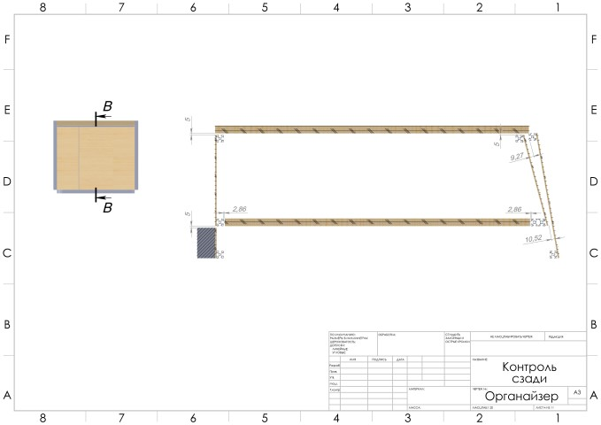
{kind=link}
Чертёж 5. Фанера отсека Рундуков.
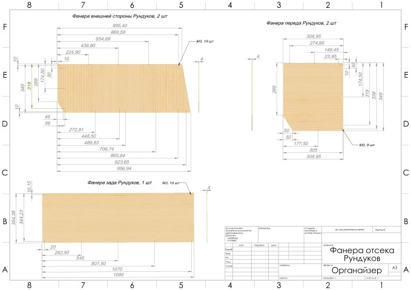
{kind=link}
Чертёж 6. Фанера отсека Ящика.
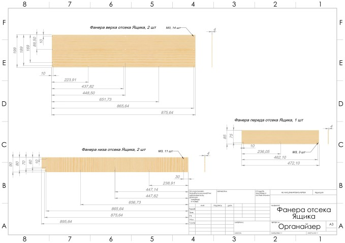
{kind=link}
Чертёж 7. Фанера Ящика. Днище Ящика съёмное.
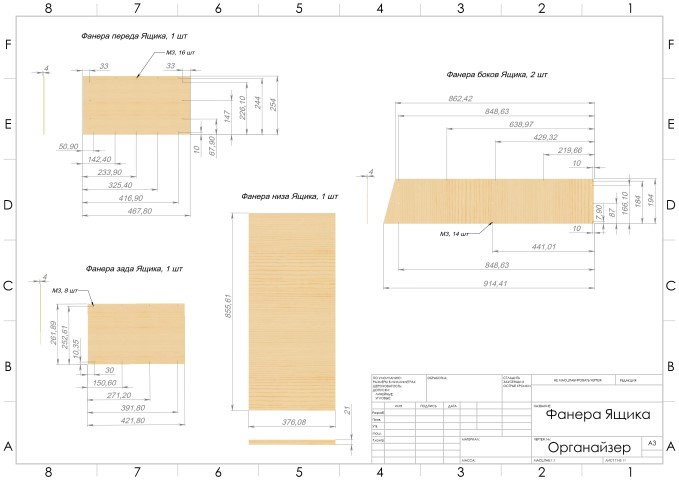
{kind=link}
Чертёж 8. Фанера крышек.
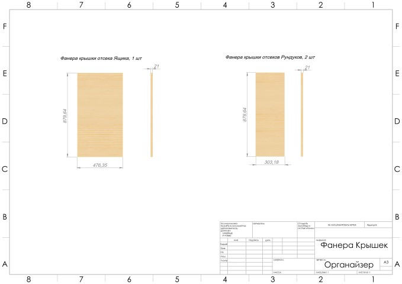
{kind=link}
Чертёж 9. Сборочный чертеж профиля Ящика. Нижний профиль содержит спил под углом.
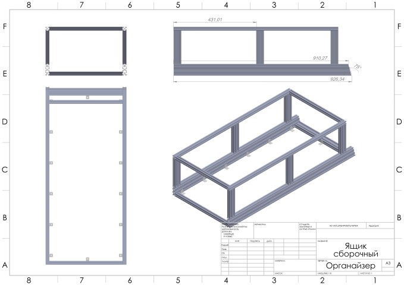
{kind=link}
Чертёж 10. Сборочный чертеж профиля Рундука. Срезанные углы - требование размещения в багажнике. В этих углах багажник вдавлен во внутрь.
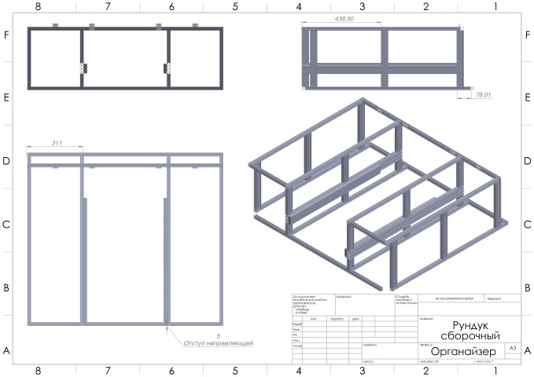
{kind=link}
Чертёж 11. Спецификация.
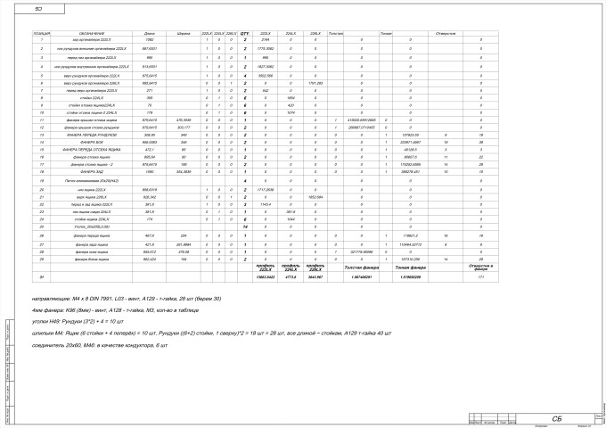
{kind=link}